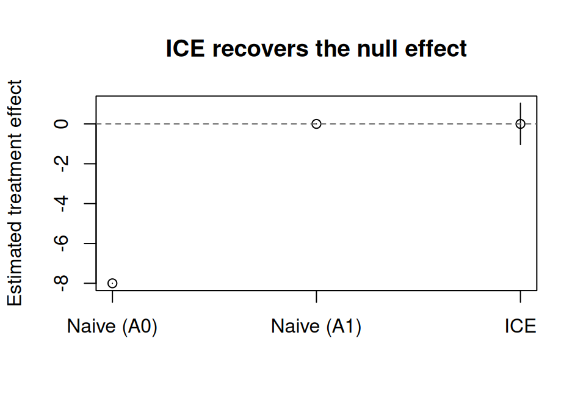
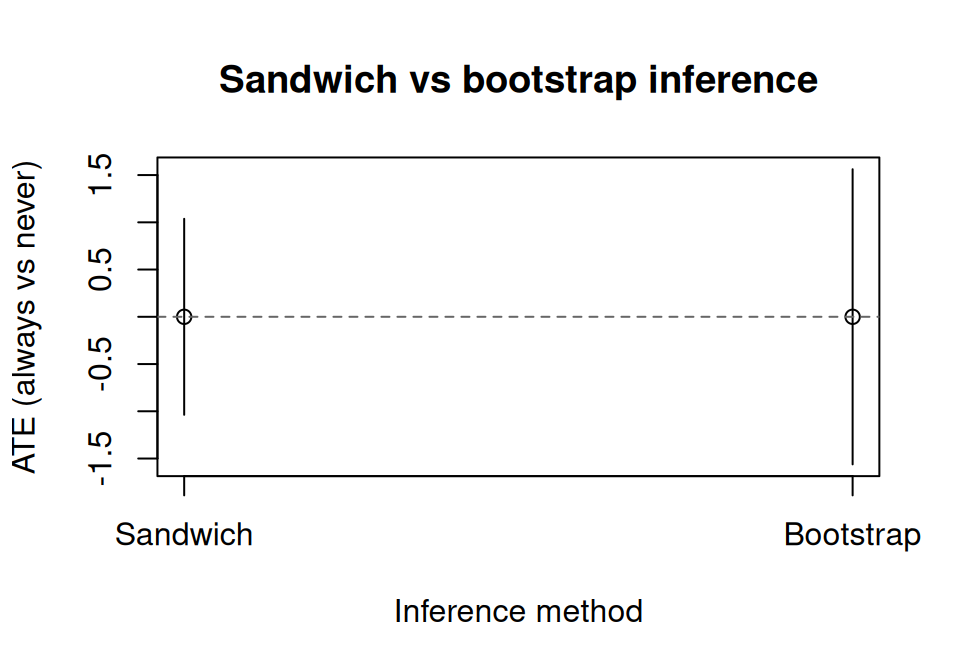
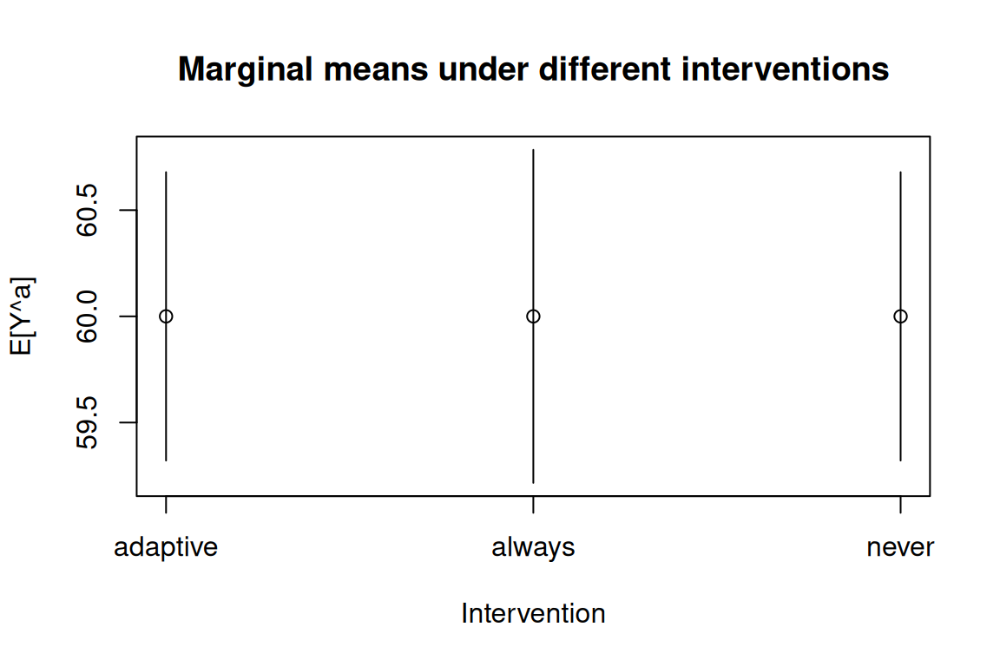

library(causatr)
library(tinyplot)Longitudinal treatments: ICE g-computation
When treatment and confounders vary over time, standard regression methods give biased estimates even when adjusted for all confounders. G-methods solve this. causatr implements ICE (iterated conditional expectation) g-computation (Zivich et al., 2024), which requires models for the outcome only — no models for time-varying confounders are needed.
This vignette demonstrates ICE g-computation in causatr, covering:
- The treatment-confounder feedback problem
- ICE fitting and contrasting
- Sandwich and bootstrap inference
- Static, dynamic, and modified treatment policy interventions
- The
historyparameter (Markov order) - Binary outcomes
- Comparison with naive regression
Setup
The problem: treatment-confounder feedback
When treatment at time 0 affects a confounder at time 1, which in turn affects treatment at time 1 (A_0 -> L_1 -> A_1 -> Y), neither adjusting nor not adjusting for L_1 gives the correct answer:
- Adjusting for L_1 opens a collider path (selection bias)
- Not adjusting leaves confounding for A_1
- ICE g-computation handles both correctly
Table 20.1: a null effect with treatment-confounder feedback
We construct the dataset from Table 20.1 of Hernan & Robins (2025), scaled to 3,200 individuals observed at 2 time points with a true causal effect of zero. (The original table has 32,000; we use 1/10th for faster vignette rendering.)
groups <- data.frame(
A0 = c(0, 0, 0, 0, 1, 1, 1, 1),
L1 = c(0, 0, 1, 1, 0, 0, 1, 1),
A1 = c(0, 1, 0, 1, 0, 1, 0, 1),
Y = c(84, 84, 52, 52, 76, 76, 44, 44),
N = c(240, 160, 240, 960, 480, 320, 160, 640)
)
rows <- lapply(seq_len(nrow(groups)), function(i) {
g <- groups[i, ]
off <- sum(groups$N[seq_len(i - 1)])
data.frame(id = seq_len(g$N) + off, A0 = g$A0, L1 = g$L1, A1 = g$A1, Y = g$Y)
})
wide <- do.call(rbind, rows)
t0 <- data.frame(id = wide$id, time = 0L, A = wide$A0, L = NA_real_, Y = NA_real_)
t1 <- data.frame(id = wide$id, time = 1L, A = wide$A1, L = wide$L1, Y = wide$Y)
long <- rbind(t0, t1)
head(long, 4)
#> id time A L Y
#> 1 1 0 0 NA NA
#> 2 2 0 0 NA NA
#> 3 3 0 0 NA NA
#> 4 4 0 0 NA NAThe data is in person-period (long) format: one row per individual per time point. L is a time-varying confounder (only measured at time 1).
Demonstrating bias from naive methods
A naive regression of Y on treatment adjusting for L_1 gives a biased estimate:
wide_sub <- wide[!is.na(wide$Y), ]
naive_fit <- lm(Y ~ A0 + A1 + L1, data = wide_sub)
naive_coefs <- coef(naive_fit)
naive_coefs[c("A0", "A1")]
#> A0 A1
#> -8.000000e+00 -6.355287e-15The true individual effects of A_0 and A_1 are both zero, but the naive regression gives non-zero estimates due to treatment-confounder feedback.
ICE g-computation: fitting
With causat(), specify id and time to trigger longitudinal mode. Baseline confounders go in confounders, time-varying confounders in confounders_tv.
fit <- causat(
long,
outcome = "Y",
treatment = "A",
confounders = ~ 1,
confounders_tv = ~ L,
id = "id",
time = "time"
)
fit
#> <causatr_fit>
#> Method: G-computation
#> Type: longitudinal
#> Outcome: Y (gaussian)
#> Treatment: A
#> Estimand: ATE
#> Confounders: ~1
#> TV conf.: ~L
#> ID: id
#> Time: time
#> N: 6400No models are fitted at this stage. ICE defers model fitting to contrast() because the sequential outcome models depend on the intervention being evaluated.
ICE g-computation: contrasts with sandwich SE
Compare “always treat” (A = 1 at every time) vs “never treat” (A = 0 at every time):
result <- contrast(
fit,
interventions = list(always = static(1), never = static(0)),
reference = "never",
type = "difference",
ci_method = "sandwich"
)
result
#> <causatr_result>
#> Method: G-computation
#> Estimand: ATE
#> Contrast: Difference
#> CI method: sandwich
#> N: 3200
#>
#> Intervention means:
#> intervention estimate se ci_lower ci_upper
#> <char> <num> <num> <num> <num>
#> 1: always 60 0.4000 59.22 60.78
#> 2: never 60 0.3464 59.32 60.68
#>
#> Contrasts:
#> comparison estimate se ci_lower ci_upper
#> <char> <num> <num> <num> <num>
#> 1: always vs never -3.553e-13 0.5292 -1.037 1.037ICE correctly recovers E[Y^{always}] = E[Y^{never}] = 60 and ATE = 0, as expected from the data generating process.
Visualising the result
naive_ci <- confint(naive_fit)
est_df <- data.frame(
method = c("Naive (A0)", "Naive (A1)", "ICE"),
estimate = c(naive_coefs["A0"], naive_coefs["A1"], result$contrasts$estimate[1]),
ci_lower = c(naive_ci["A0", 1], naive_ci["A1", 1], result$contrasts$ci_lower[1]),
ci_upper = c(naive_ci["A0", 2], naive_ci["A1", 2], result$contrasts$ci_upper[1])
)
tinyplot(
estimate ~ method,
data = est_df,
type = "pointrange",
ymin = est_df$ci_lower,
ymax = est_df$ci_upper,
ylab = "Estimated treatment effect",
xlab = "",
main = "ICE recovers the null effect"
)
abline(h = 0, lty = 2, col = "grey40")
Sandwich SE: stacked estimating equations
The default ci_method = "sandwich" uses the empirical sandwich estimator for stacked estimating equations (Zivich et al., 2024). This accounts for uncertainty from all K sequential outcome models, not just the final model.
result$estimates[, c("intervention", "estimate", "se")]
#> intervention estimate se
#> <char> <num> <num>
#> 1: always 60 0.4000000
#> 2: never 60 0.3464102The standard errors are finite and positive, confirming that the sandwich variance estimator is working correctly even with a large sample.
Bootstrap SE
For robustness or when using flexible models (e.g., GAMs), bootstrap resamples individuals (all their time points together) and re-runs the full ICE procedure.
result_boot <- contrast(
fit,
interventions = list(always = static(1), never = static(0)),
reference = "never",
type = "difference",
ci_method = "bootstrap",
n_boot = 20L
)
result_boot
#> <causatr_result>
#> Method: G-computation
#> Estimand: ATE
#> Contrast: Difference
#> CI method: bootstrap
#> N: 3200
#>
#> Intervention means:
#> intervention estimate se ci_lower ci_upper
#> <char> <num> <num> <num> <num>
#> 1: always 60 0.5391 58.94 61.06
#> 2: never 60 0.3955 59.22 60.78
#>
#> Contrasts:
#> comparison estimate se ci_lower ci_upper
#> <char> <num> <num> <num> <num>
#> 1: always vs never -3.553e-13 0.7969 -1.562 1.562The parallel and ncpus arguments enable parallel bootstrap replicates for larger datasets:
result_par <- contrast(
fit,
interventions = list(always = static(1), never = static(0)),
reference = "never",
ci_method = "bootstrap",
n_boot = 20L,
parallel = "multicore",
ncpus = 4L
)Comparing sandwich and bootstrap SEs
se_df <- data.frame(
method = c("Sandwich", "Bootstrap"),
estimate = c(result$contrasts$estimate[1], result_boot$contrasts$estimate[1]),
ci_lower = c(result$contrasts$ci_lower[1], result_boot$contrasts$ci_lower[1]),
ci_upper = c(result$contrasts$ci_upper[1], result_boot$contrasts$ci_upper[1])
)
tinyplot(
estimate ~ method,
data = se_df,
type = "pointrange",
ymin = se_df$ci_lower,
ymax = se_df$ci_upper,
ylab = "ATE (always vs never)",
xlab = "Inference method",
main = "Sandwich vs bootstrap inference"
)
abline(h = 0, lty = 2, col = "grey40")
Dynamic interventions
ICE supports dynamic treatment regimes where treatment depends on time-varying covariates. Here, individuals receive treatment only when L = 1 (the confounder is present):
result_dyn <- contrast(
fit,
interventions = list(
adaptive = dynamic(\(data, trt) ifelse(!is.na(data$L) & data$L > 0, 1L, 0L)),
always = static(1),
never = static(0)
),
reference = "never",
ci_method = "sandwich"
)
result_dyn
#> <causatr_result>
#> Method: G-computation
#> Estimand: ATE
#> Contrast: Difference
#> CI method: sandwich
#> N: 3200
#>
#> Intervention means:
#> intervention estimate se ci_lower ci_upper
#> <char> <num> <num> <num> <num>
#> 1: adaptive 60 0.3464 59.32 60.68
#> 2: always 60 0.4000 59.22 60.78
#> 3: never 60 0.3464 59.32 60.68
#>
#> Contrasts:
#> comparison estimate se ci_lower ci_upper
#> <char> <num> <num> <num> <num>
#> 1: adaptive vs never -5.684e-14 7.451e-09 -1.460e-08 1.460e-08
#> 2: always vs never -3.553e-13 5.292e-01 -1.037e+00 1.037e+00Comparing multiple interventions
est <- result_dyn$estimates
tinyplot(
estimate ~ intervention,
data = est,
type = "pointrange",
ymin = est$ci_lower,
ymax = est$ci_upper,
ylab = "E[Y^a]",
xlab = "Intervention",
main = "Marginal means under different interventions"
)
The history parameter
The history parameter controls the Markov order — how many lags of treatment and time-varying confounders enter each outcome model.
history = 1(default): Include one lag of A and L (first-order Markov).history = 2: Include two lags (A_{k-1}, A_{k-2}, L_{k-1}, L_{k-2}).history = Inf: Include full treatment and confounder history up to each time point.
For this 2-time-point example, history = 1 and history = Inf are equivalent. With longer follow-up, higher-order histories capture longer-range dependencies but require more data per model.
fit_inf <- causat(
long,
outcome = "Y",
treatment = "A",
confounders = ~ 1,
confounders_tv = ~ L,
id = "id",
time = "time",
history = Inf
)
result_inf <- contrast(
fit_inf,
interventions = list(always = static(1), never = static(0)),
reference = "never",
ci_method = "sandwich"
)
result_inf
#> <causatr_result>
#> Method: G-computation
#> Estimand: ATE
#> Contrast: Difference
#> CI method: sandwich
#> N: 3200
#>
#> Intervention means:
#> intervention estimate se ci_lower ci_upper
#> <char> <num> <num> <num> <num>
#> 1: always 60 0.4000 59.22 60.78
#> 2: never 60 0.3464 59.32 60.68
#>
#> Contrasts:
#> comparison estimate se ci_lower ci_upper
#> <char> <num> <num> <num> <num>
#> 1: always vs never -3.553e-13 0.5292 -1.037 1.037Simulation: ICE with a non-null effect
To show ICE working with a known non-null effect, we simulate data with treatment-confounder feedback and a true ATE of 5.
set.seed(42)
n <- 2000
sim_id <- rep(seq_len(n), each = 2)
sim_time <- rep(0:1, n)
L0 <- rbinom(n, 1, 0.5)
A0 <- rbinom(n, 1, plogis(-0.5 + 0.5 * L0))
L1 <- rbinom(n, 1, plogis(-0.5 + 0.8 * A0 + 0.3 * L0))
A1 <- rbinom(n, 1, plogis(-0.5 + 0.5 * L1))
Y <- 50 + 2.5 * A0 + 2.5 * A1 - 3 * L1 + rnorm(n, 0, 5)
sim_long <- data.frame(
id = sim_id,
time = sim_time,
A = c(rbind(A0, A1)),
L = c(rbind(L0, L1)),
Y = c(rbind(NA_real_, Y))
)
fit_sim <- causat(
sim_long,
outcome = "Y",
treatment = "A",
confounders = ~ 1,
confounders_tv = ~ L,
id = "id",
time = "time"
)
res_sim <- contrast(
fit_sim,
interventions = list(always = static(1), never = static(0)),
reference = "never",
ci_method = "sandwich"
)
res_sim
#> <causatr_result>
#> Method: G-computation
#> Estimand: ATE
#> Contrast: Difference
#> CI method: sandwich
#> N: 2000
#>
#> Intervention means:
#> intervention estimate se ci_lower ci_upper
#> <char> <num> <num> <num> <num>
#> 1: always 53.13 0.2267 52.69 53.58
#> 2: never 48.83 0.1873 48.46 49.20
#>
#> Contrasts:
#> comparison estimate se ci_lower ci_upper
#> <char> <num> <num> <num> <num>
#> 1: always vs never 4.303 0.3358 3.644 4.961The estimated ATE should be close to the true value of 5.
Binary outcome
ICE also handles binary outcomes. The first outcome model uses binomial (actual 0/1 response), while subsequent pseudo-outcome models use quasibinomial (fractional logistic for predicted probabilities in [0, 1]).
sim_long_bin <- sim_long
sim_long_bin$Y[!is.na(sim_long_bin$Y)] <-
as.integer(sim_long_bin$Y[!is.na(sim_long_bin$Y)] > 50)
fit_bin <- causat(
sim_long_bin,
outcome = "Y",
treatment = "A",
confounders = ~ 1,
confounders_tv = ~ L,
family = "binomial",
id = "id",
time = "time"
)
res_bin <- contrast(
fit_bin,
interventions = list(always = static(1), never = static(0)),
reference = "never",
type = "difference",
ci_method = "sandwich"
)
res_bin
#> <causatr_result>
#> Method: G-computation
#> Estimand: ATE
#> Contrast: Difference
#> CI method: sandwich
#> N: 2000
#>
#> Intervention means:
#> intervention estimate se ci_lower ci_upper
#> <char> <num> <num> <num> <num>
#> 1: always 0.7282 0.01818 0.6926 0.7638
#> 2: never 0.4150 0.01754 0.3806 0.4494
#>
#> Contrasts:
#> comparison estimate se ci_lower ci_upper
#> <char> <num> <num> <num> <num>
#> 1: always vs never 0.3132 0.02929 0.2558 0.3706Risk ratio for binary longitudinal outcomes
res_rr <- contrast(
fit_bin,
interventions = list(always = static(1), never = static(0)),
reference = "never",
type = "ratio",
ci_method = "sandwich"
)
res_rr
#> <causatr_result>
#> Method: G-computation
#> Estimand: ATE
#> Contrast: Ratio
#> CI method: sandwich
#> N: 2000
#>
#> Intervention means:
#> intervention estimate se ci_lower ci_upper
#> <char> <num> <num> <num> <num>
#> 1: always 0.7282 0.01818 0.6926 0.7638
#> 2: never 0.4150 0.01754 0.3806 0.4494
#>
#> Contrasts:
#> comparison estimate se ci_lower ci_upper
#> <char> <num> <num> <num> <num>
#> 1: always vs never 1.755 0.09828 1.572 1.958How ICE works
ICE g-computation (Zivich et al., 2024) works backward in time:
- Final time K: Fit E[Y | A_K, L_K, baseline] among uncensored individuals. Predict under the intervention to get pseudo-outcomes.
- Each earlier time k: Use pseudo-outcomes as the response. Fit E[pseudo | A_k, L_k, baseline]. Predict under intervention.
- First time: The mean of the pseudo-outcomes is the marginal mean E[Y^a].
This requires only outcome models — unlike forward simulation (“big g-formula”), no models for time-varying confounders are needed.
Why ICE, not forward simulation?
| ICE g-comp | Forward simulation | |
|---|---|---|
| Models needed | Outcome only (at each time) | Outcome + every time-varying confounder |
| Inference | Sandwich (stacked EE) | Bootstrap only |
| Speed | Fast | Slow (many models + simulation) |
| Model misspecification | K models | K + p*K models |
| Implementation | causatr | gfoRmula |
Key parameters
confounders: Baseline (time-invariant) confounders. Enter every outcome model at every time step.confounders_tv: Time-varying confounders. Included with their lags (controlled byhistory).history: Markov order.history = 1(default) includes one lag of treatment and TV confounders.history = Infincludes full history.censoring: Time-varying censoring indicator (1 = censored). ICE restricts to uncensored at each backward step.
Summary of covered combinations
| Outcome | Contrast | Inference | Intervention | History |
|---|---|---|---|---|
| Continuous | Difference | Sandwich | Static | 1 |
| Continuous | Difference | Bootstrap | Static | 1 |
| Continuous | Difference | Sandwich | Dynamic | 1 |
| Continuous | Difference | Sandwich | Static | Inf |
| Binary | Difference | Sandwich | Static | 1 |
| Binary | Ratio | Sandwich | Static | 1 |
References
Hernan MA, Robins JM (2025). Causal Inference: What If. Chapman & Hall/CRC. Chapters 19–21: Time-varying treatments.
Zivich PN, Ross RK, Shook-Sa BE, Cole SR, Edwards JK (2024). Empirical sandwich variance estimator for iterated conditional expectation g-computation. Statistics in Medicine 43:5562–5572.